Setting small nu leads to conservative behaviour
Last updated: 2026-05-12
Checks: 6 1
Knit directory: susie_love_experiments/
This reproducible R Markdown analysis was created with workflowr (version 1.7.1). The Checks tab describes the reproducibility checks that were applied when the results were created. The Past versions tab lists the development history.
The R Markdown file has unstaged changes. To know which version of
the R Markdown file created these results, you’ll want to first commit
it to the Git repo. If you’re still working on the analysis, you can
ignore this warning. When you’re finished, you can run
wflow_publish to commit the R Markdown file and build the
HTML.
Great job! The global environment was empty. Objects defined in the global environment can affect the analysis in your R Markdown file in unknown ways. For reproduciblity it’s best to always run the code in an empty environment.
The command set.seed(20260419) was run prior to running
the code in the R Markdown file. Setting a seed ensures that any results
that rely on randomness, e.g. subsampling or permutations, are
reproducible.
Great job! Recording the operating system, R version, and package versions is critical for reproducibility.
Nice! There were no cached chunks for this analysis, so you can be confident that you successfully produced the results during this run.
Great job! Using relative paths to the files within your workflowr project makes it easier to run your code on other machines.
Great! You are using Git for version control. Tracking code development and connecting the code version to the results is critical for reproducibility.
The results in this page were generated with repository version 1d84341. See the Past versions tab to see a history of the changes made to the R Markdown and HTML files.
Note that you need to be careful to ensure that all relevant files for
the analysis have been committed to Git prior to generating the results
(you can use wflow_publish or
wflow_git_commit). workflowr only checks the R Markdown
file, but you know if there are other scripts or data files that it
depends on. Below is the status of the Git repository when the results
were generated:
Ignored files:
Ignored: .DS_Store
Ignored: analysis/figure/
Unstaged changes:
Modified: analysis/small_nu.Rmd
Note that any generated files, e.g. HTML, png, CSS, etc., are not included in this status report because it is ok for generated content to have uncommitted changes.
These are the previous versions of the repository in which changes were
made to the R Markdown (analysis/small_nu.Rmd) and HTML
(docs/small_nu.html) files. If you’ve configured a remote
Git repository (see ?wflow_git_remote), click on the
hyperlinks in the table below to view the files as they were in that
past version.
| File | Version | Author | Date | Message |
|---|---|---|---|---|
| html | 1d84341 | dodat-stats | 2026-05-07 | Build site. |
| Rmd | b9f6b5c | dodat-stats | 2026-05-07 | wflow_publish("analysis/small_nu.Rmd", republish = TRUE) |
| html | 302fc36 | dodat-stats | 2026-05-07 | Build site. |
| Rmd | 7d9e8c0 | dodat-stats | 2026-05-07 | wflow_publish(c("analysis/index.Rmd", "analysis/small_nu.Rmd")) |
1. Simulate data from a coalescent model
library(susielove)
seed <- 2
T_split <- 25
chrom <- "chr22"
start <- 20e6
end <- 21e6
N <- 25000L
N0 <- 200L
J <- 1000L
h2 <- 0.01
res <- sim_2pop(chrom, start, end,
T_split = T_split,
n_gwas = N,
n_ref = N0,
J = J,
h2 = h2,
seed = seed)
v <- res$v
R <- res$R
R0 <- res$R0
beta_true <- res$beta_true
causal_SNPs_loc <- res$causal_SNPs_loc
true_SNP = which(beta_true != 0)
plot(v, pch = 16)
points(causal_SNPs_loc, v[causal_SNPs_loc], pch = 16, col = "red")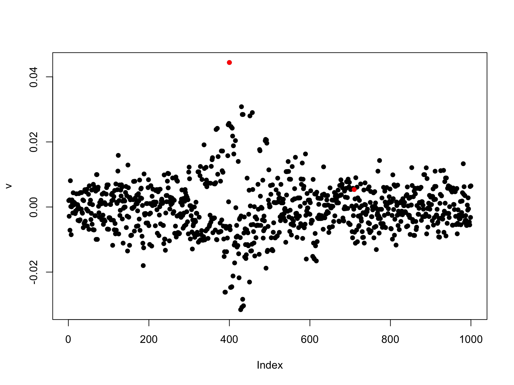
| Version | Author | Date |
|---|---|---|
| 302fc36 | dodat-stats | 2026-05-07 |
2. SuSiE with out-of-sample LD:
library(susieR)Warning: package 'susieR' was built under R version 4.3.3d0_inv_sqrt <- 1 / sqrt(diag(R0))
LD0 <- diag(d0_inv_sqrt) %*% R0 %*% diag(d0_inv_sqrt)
d_sqrt <- sqrt(diag(R))
R_tilde <- diag(d_sqrt) %*% LD0 %*% diag(d_sqrt)
fit_R_tilde <- susie_suff_stat(
XtX = N * R_tilde,
Xty = N * v,
n = N,
yty = N
)
susie_plot(fit_R_tilde, y = "PIP", b = beta_true,
main = "Out-of-sample cov mat (corrected diag)")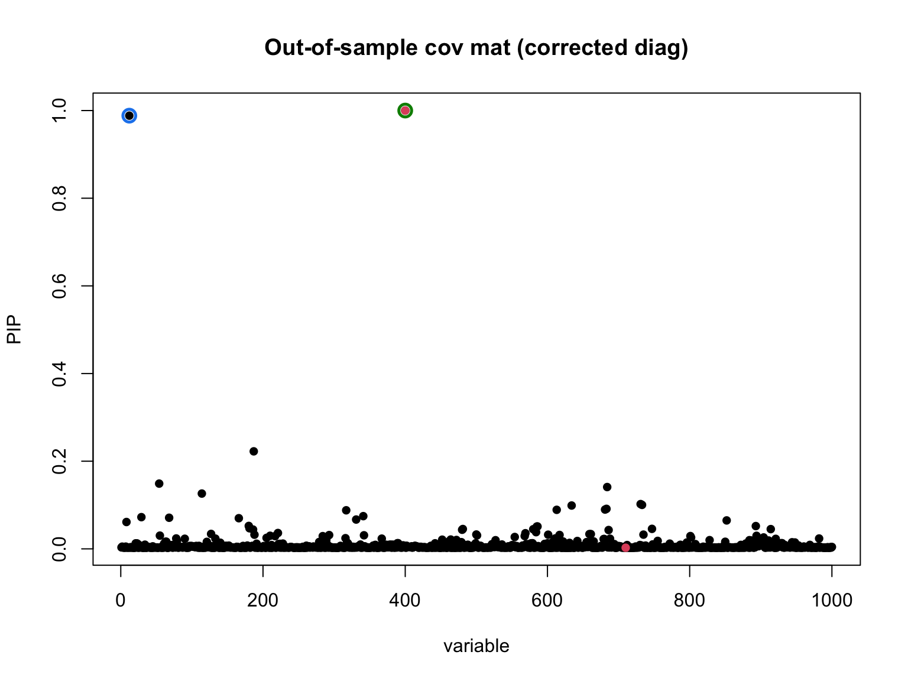
| Version | Author | Date |
|---|---|---|
| 302fc36 | dodat-stats | 2026-05-07 |
3. SuSiE-Love with leared nu0
lambda <- 1 / (N0 + 1)
diag_R <- diag(R)
R_out <- R_tilde
k <- min(N0, J)
love_res <- susie_love_lambda(v, R_out, diag_R,
lambda,
N, L = 5,
k,
nu_0_init = 1000,
step_susie = 20,
step_R = 30,
step_nu = 10,
max_iter = 30,
tol = 1e-4)Iter 1 | Loss: -2.6384 | nu_q: 818.3 | nu_0: 816.4
Iter 2 | Loss: -2.6962 | nu_q: 709.2 | nu_0: 705.6
Iter 3 | Loss: -2.7117 | nu_q: 656.3 | nu_0: 651.9
Iter 4 | Loss: -2.7167 | nu_q: 631.5 | nu_0: 626.6
Iter 5 | Loss: -2.7176 | nu_q: 620.5 | nu_0: 615.5
Iter 6 | Loss: -2.7178 | nu_q: 620.5 | nu_0: 615.5
Iter 7 | Loss: -2.7184 | nu_q: 613.2 | nu_0: 607.7
Iter 8 | Loss: -2.7185 | nu_q: 610.3 | nu_0: 604.9
Iter 9 | Loss: -2.7186 | nu_q: 610.3 | nu_0: 604.9
Converged at iteration 9 b_res <- love_res$b_res
R_q <- love_res$R_q
susie_plot_alpha(
alpha = b_res$alpha,
R = cov2cor(R_q),
b = beta_true,
main = paste0("SuSiE-LovE with lambda = ", lambda)
)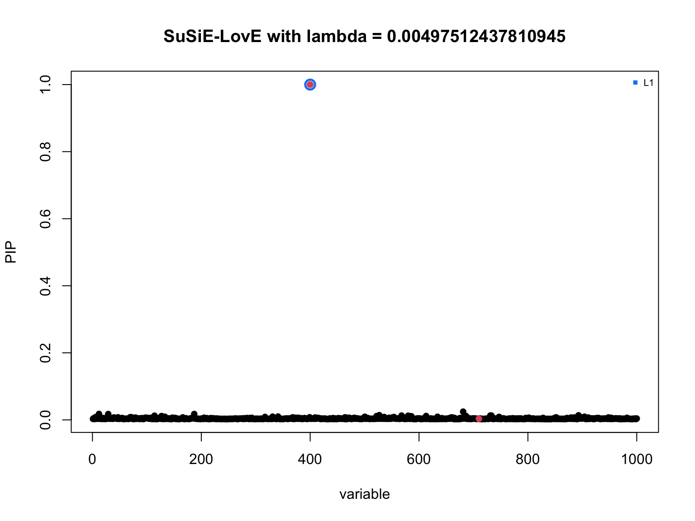
| Version | Author | Date |
|---|---|---|
| 302fc36 | dodat-stats | 2026-05-07 |
4. SuSiE-LovE with fixed and small nu0
Now let’s try to set \(\nu_0\) to very small to see if it can be more conservative:
R_out <- R_tilde
## nu_0 = a * N_0 + delta, and we set delta = 1, so minimal nu_0 = 1
nu_0 = 1.1
lambda <- 1 / nu_0
diag_R <- diag(R)
k <- min(N0, J)
nu_q = nu_0 + 1
susie_love_small_nu <- susie_love_fix_2params(v, R_out, diag_R,
lambda, nu_q, nu_0,
N, L = 5,
k,
z_init = NULL,
step_susie = 20,
step_R = 30,
step_nu = 50,
max_iter = 500,
max_iter_init = 100,
tol = 1e-4)Iter 1 | Loss: 72.2111 | nu_q: 2.4 | nu_0: 1.1
Iter 2 | Loss: 63.4391 | nu_q: 2.7 | nu_0: 1.1
Iter 3 | Loss: 56.9731 | nu_q: 3.0 | nu_0: 1.1
Iter 4 | Loss: 51.7780 | nu_q: 3.3 | nu_0: 1.1
Iter 5 | Loss: 47.5367 | nu_q: 3.6 | nu_0: 1.1
Iter 6 | Loss: 44.0427 | nu_q: 3.9 | nu_0: 1.1
Iter 7 | Loss: 41.0766 | nu_q: 4.2 | nu_0: 1.1
Iter 8 | Loss: 38.5400 | nu_q: 4.5 | nu_0: 1.1
Iter 9 | Loss: 36.3524 | nu_q: 4.8 | nu_0: 1.1
Iter 10 | Loss: 34.4399 | nu_q: 5.1 | nu_0: 1.1
Iter 11 | Loss: 32.7121 | nu_q: 5.4 | nu_0: 1.1
Iter 12 | Loss: 31.2048 | nu_q: 5.7 | nu_0: 1.1
Iter 13 | Loss: 29.7824 | nu_q: 6.0 | nu_0: 1.1
Iter 14 | Loss: 28.5214 | nu_q: 6.3 | nu_0: 1.1
Iter 15 | Loss: 27.4100 | nu_q: 6.6 | nu_0: 1.1
Iter 16 | Loss: 26.3717 | nu_q: 6.9 | nu_0: 1.1
Iter 17 | Loss: 25.3439 | nu_q: 7.3 | nu_0: 1.1
Iter 18 | Loss: 24.4922 | nu_q: 7.5 | nu_0: 1.1
Iter 19 | Loss: 23.6740 | nu_q: 7.8 | nu_0: 1.1
Iter 20 | Loss: 22.9566 | nu_q: 8.1 | nu_0: 1.1
Iter 21 | Loss: 22.2869 | nu_q: 8.4 | nu_0: 1.1
Iter 22 | Loss: 21.6697 | nu_q: 8.7 | nu_0: 1.1
Iter 23 | Loss: 21.0729 | nu_q: 9.0 | nu_0: 1.1
Iter 24 | Loss: 20.5524 | nu_q: 9.3 | nu_0: 1.1
Iter 25 | Loss: 20.0233 | nu_q: 9.6 | nu_0: 1.1
Iter 26 | Loss: 19.5670 | nu_q: 9.9 | nu_0: 1.1
Iter 27 | Loss: 19.1214 | nu_q: 10.2 | nu_0: 1.1
Iter 28 | Loss: 18.6683 | nu_q: 10.5 | nu_0: 1.1
Iter 29 | Loss: 18.2511 | nu_q: 10.8 | nu_0: 1.1
Iter 30 | Loss: 17.8422 | nu_q: 11.1 | nu_0: 1.1
Iter 31 | Loss: 17.4447 | nu_q: 11.4 | nu_0: 1.1
Iter 32 | Loss: 17.1177 | nu_q: 11.7 | nu_0: 1.1
Iter 33 | Loss: 16.7960 | nu_q: 12.0 | nu_0: 1.1
Iter 34 | Loss: 16.5195 | nu_q: 12.3 | nu_0: 1.1
Iter 35 | Loss: 16.2474 | nu_q: 12.5 | nu_0: 1.1
Iter 36 | Loss: 15.9565 | nu_q: 12.8 | nu_0: 1.1
Iter 37 | Loss: 15.6675 | nu_q: 13.2 | nu_0: 1.1
Iter 38 | Loss: 15.4009 | nu_q: 13.5 | nu_0: 1.1
Iter 39 | Loss: 15.1394 | nu_q: 13.7 | nu_0: 1.1
Iter 40 | Loss: 14.8831 | nu_q: 14.1 | nu_0: 1.1
Iter 41 | Loss: 14.6508 | nu_q: 14.4 | nu_0: 1.1
Iter 42 | Loss: 14.4215 | nu_q: 14.7 | nu_0: 1.1
Iter 43 | Loss: 14.1907 | nu_q: 15.0 | nu_0: 1.1
Iter 44 | Loss: 14.0008 | nu_q: 15.3 | nu_0: 1.1
Iter 45 | Loss: 13.7745 | nu_q: 15.6 | nu_0: 1.1
Iter 46 | Loss: 13.5931 | nu_q: 15.9 | nu_0: 1.1
Iter 47 | Loss: 13.4345 | nu_q: 16.1 | nu_0: 1.1
Iter 48 | Loss: 13.2307 | nu_q: 16.4 | nu_0: 1.1
Iter 49 | Loss: 13.0497 | nu_q: 16.7 | nu_0: 1.1
Iter 50 | Loss: 12.8605 | nu_q: 17.0 | nu_0: 1.1
Iter 51 | Loss: 12.6137 | nu_q: 17.3 | nu_0: 1.1
Iter 52 | Loss: 12.3225 | nu_q: 17.7 | nu_0: 1.1
Iter 53 | Loss: 12.0875 | nu_q: 17.9 | nu_0: 1.1
Iter 54 | Loss: 11.7669 | nu_q: 18.2 | nu_0: 1.1
Iter 55 | Loss: 10.8487 | nu_q: 18.7 | nu_0: 1.1
Iter 56 | Loss: 9.8254 | nu_q: 19.1 | nu_0: 1.1
Iter 57 | Loss: 9.7076 | nu_q: 19.4 | nu_0: 1.1
Iter 58 | Loss: 9.6056 | nu_q: 19.6 | nu_0: 1.1
Iter 59 | Loss: 9.5086 | nu_q: 19.9 | nu_0: 1.1
Iter 60 | Loss: 9.4023 | nu_q: 20.2 | nu_0: 1.1
Iter 61 | Loss: 9.3020 | nu_q: 20.5 | nu_0: 1.1
Iter 62 | Loss: 9.2130 | nu_q: 20.8 | nu_0: 1.1
Iter 63 | Loss: 9.1117 | nu_q: 21.1 | nu_0: 1.1
Iter 64 | Loss: 9.0222 | nu_q: 21.3 | nu_0: 1.1
Iter 65 | Loss: 8.9408 | nu_q: 21.6 | nu_0: 1.1
Iter 66 | Loss: 8.8615 | nu_q: 21.9 | nu_0: 1.1
Iter 67 | Loss: 8.7801 | nu_q: 22.2 | nu_0: 1.1
Iter 68 | Loss: 8.7056 | nu_q: 22.4 | nu_0: 1.1
Iter 69 | Loss: 8.6245 | nu_q: 22.7 | nu_0: 1.1
Iter 70 | Loss: 8.5519 | nu_q: 23.0 | nu_0: 1.1
Iter 71 | Loss: 8.4823 | nu_q: 23.3 | nu_0: 1.1
Iter 72 | Loss: 8.4178 | nu_q: 23.6 | nu_0: 1.1
Iter 73 | Loss: 8.3551 | nu_q: 23.8 | nu_0: 1.1
Iter 74 | Loss: 8.2953 | nu_q: 24.1 | nu_0: 1.1
Iter 75 | Loss: 8.2373 | nu_q: 24.4 | nu_0: 1.1
Iter 76 | Loss: 8.1766 | nu_q: 24.6 | nu_0: 1.1
Iter 77 | Loss: 8.1208 | nu_q: 24.9 | nu_0: 1.1
Iter 78 | Loss: 8.0670 | nu_q: 25.1 | nu_0: 1.1
Iter 79 | Loss: 8.0100 | nu_q: 25.4 | nu_0: 1.1
Iter 80 | Loss: 7.9542 | nu_q: 25.7 | nu_0: 1.1
Iter 81 | Loss: 7.9033 | nu_q: 25.9 | nu_0: 1.1
Iter 82 | Loss: 7.8533 | nu_q: 26.2 | nu_0: 1.1
Iter 83 | Loss: 7.8034 | nu_q: 26.5 | nu_0: 1.1
Iter 84 | Loss: 7.7554 | nu_q: 26.7 | nu_0: 1.1
Iter 85 | Loss: 7.7114 | nu_q: 27.0 | nu_0: 1.1
Iter 86 | Loss: 7.6680 | nu_q: 27.2 | nu_0: 1.1
Iter 87 | Loss: 7.6248 | nu_q: 27.5 | nu_0: 1.1
Iter 88 | Loss: 7.5837 | nu_q: 27.8 | nu_0: 1.1
Iter 89 | Loss: 7.5420 | nu_q: 28.0 | nu_0: 1.1
Iter 90 | Loss: 7.5047 | nu_q: 28.3 | nu_0: 1.1
Iter 91 | Loss: 7.4687 | nu_q: 28.5 | nu_0: 1.1
Iter 92 | Loss: 7.4318 | nu_q: 28.8 | nu_0: 1.1
Iter 93 | Loss: 7.3966 | nu_q: 29.0 | nu_0: 1.1
Iter 94 | Loss: 7.3632 | nu_q: 29.2 | nu_0: 1.1
Iter 95 | Loss: 7.3298 | nu_q: 29.5 | nu_0: 1.1
Iter 96 | Loss: 7.2971 | nu_q: 29.7 | nu_0: 1.1
Iter 97 | Loss: 7.2668 | nu_q: 30.0 | nu_0: 1.1
Iter 98 | Loss: 7.2387 | nu_q: 30.2 | nu_0: 1.1
Iter 99 | Loss: 7.2109 | nu_q: 30.4 | nu_0: 1.1
Iter 100 | Loss: 7.1839 | nu_q: 30.6 | nu_0: 1.1
Iter 101 | Loss: 7.1565 | nu_q: 30.9 | nu_0: 1.1
Iter 102 | Loss: 7.1302 | nu_q: 31.1 | nu_0: 1.1
Iter 103 | Loss: 7.1049 | nu_q: 31.3 | nu_0: 1.1
Iter 104 | Loss: 7.0797 | nu_q: 31.6 | nu_0: 1.1
Iter 105 | Loss: 7.0558 | nu_q: 31.8 | nu_0: 1.1
Iter 106 | Loss: 7.0325 | nu_q: 32.0 | nu_0: 1.1
Iter 107 | Loss: 7.0101 | nu_q: 32.2 | nu_0: 1.1
Iter 108 | Loss: 6.9887 | nu_q: 32.4 | nu_0: 1.1
Iter 109 | Loss: 6.9682 | nu_q: 32.7 | nu_0: 1.1
Iter 110 | Loss: 6.9483 | nu_q: 32.9 | nu_0: 1.1
Iter 111 | Loss: 6.9285 | nu_q: 33.1 | nu_0: 1.1
Iter 112 | Loss: 6.9089 | nu_q: 33.3 | nu_0: 1.1
Iter 113 | Loss: 6.8894 | nu_q: 33.5 | nu_0: 1.1
Iter 114 | Loss: 6.8709 | nu_q: 33.7 | nu_0: 1.1
Iter 115 | Loss: 6.8532 | nu_q: 33.9 | nu_0: 1.1
Iter 116 | Loss: 6.8357 | nu_q: 34.1 | nu_0: 1.1
Iter 117 | Loss: 6.8189 | nu_q: 34.3 | nu_0: 1.1
Iter 118 | Loss: 6.8032 | nu_q: 34.5 | nu_0: 1.1
Iter 119 | Loss: 6.7876 | nu_q: 34.7 | nu_0: 1.1
Iter 120 | Loss: 6.7725 | nu_q: 34.9 | nu_0: 1.1
Iter 121 | Loss: 6.7579 | nu_q: 35.1 | nu_0: 1.1
Iter 122 | Loss: 6.7437 | nu_q: 35.3 | nu_0: 1.1
Iter 123 | Loss: 6.7300 | nu_q: 35.5 | nu_0: 1.1
Iter 124 | Loss: 6.7168 | nu_q: 35.7 | nu_0: 1.1
Iter 125 | Loss: 6.7037 | nu_q: 35.9 | nu_0: 1.1
Iter 126 | Loss: 6.6909 | nu_q: 36.1 | nu_0: 1.1
Iter 127 | Loss: 6.6786 | nu_q: 36.3 | nu_0: 1.1
Iter 128 | Loss: 6.6665 | nu_q: 36.4 | nu_0: 1.1
Iter 129 | Loss: 6.6551 | nu_q: 36.6 | nu_0: 1.1
Iter 130 | Loss: 6.6439 | nu_q: 36.8 | nu_0: 1.1
Iter 131 | Loss: 6.6329 | nu_q: 37.0 | nu_0: 1.1
Iter 132 | Loss: 6.6222 | nu_q: 37.1 | nu_0: 1.1
Iter 133 | Loss: 6.6116 | nu_q: 37.3 | nu_0: 1.1
Iter 134 | Loss: 6.6015 | nu_q: 37.5 | nu_0: 1.1
Iter 135 | Loss: 6.5914 | nu_q: 37.7 | nu_0: 1.1
Iter 136 | Loss: 6.5821 | nu_q: 37.8 | nu_0: 1.1
Iter 137 | Loss: 6.5730 | nu_q: 38.0 | nu_0: 1.1
Iter 138 | Loss: 6.5639 | nu_q: 38.2 | nu_0: 1.1
Iter 139 | Loss: 6.5551 | nu_q: 38.3 | nu_0: 1.1
Iter 140 | Loss: 6.5466 | nu_q: 38.5 | nu_0: 1.1
Iter 141 | Loss: 6.5383 | nu_q: 38.7 | nu_0: 1.1
Iter 142 | Loss: 6.5301 | nu_q: 38.8 | nu_0: 1.1
Iter 143 | Loss: 6.5223 | nu_q: 39.0 | nu_0: 1.1
Iter 144 | Loss: 6.5148 | nu_q: 39.1 | nu_0: 1.1
Iter 145 | Loss: 6.5074 | nu_q: 39.3 | nu_0: 1.1
Iter 146 | Loss: 6.5003 | nu_q: 39.4 | nu_0: 1.1
Iter 147 | Loss: 6.4936 | nu_q: 39.6 | nu_0: 1.1
Iter 148 | Loss: 6.4867 | nu_q: 39.7 | nu_0: 1.1
Iter 149 | Loss: 6.4801 | nu_q: 39.9 | nu_0: 1.1
Iter 150 | Loss: 6.4737 | nu_q: 40.0 | nu_0: 1.1
Iter 151 | Loss: 6.4676 | nu_q: 40.2 | nu_0: 1.1
Iter 152 | Loss: 6.4616 | nu_q: 40.3 | nu_0: 1.1
Iter 153 | Loss: 6.4559 | nu_q: 40.5 | nu_0: 1.1
Iter 154 | Loss: 6.4502 | nu_q: 40.6 | nu_0: 1.1
Iter 155 | Loss: 6.4448 | nu_q: 40.7 | nu_0: 1.1
Iter 156 | Loss: 6.4394 | nu_q: 40.9 | nu_0: 1.1
Iter 157 | Loss: 6.4342 | nu_q: 41.0 | nu_0: 1.1
Iter 158 | Loss: 6.4291 | nu_q: 41.1 | nu_0: 1.1
Iter 159 | Loss: 6.4243 | nu_q: 41.3 | nu_0: 1.1
Iter 160 | Loss: 6.4194 | nu_q: 41.4 | nu_0: 1.1
Iter 161 | Loss: 6.4146 | nu_q: 41.5 | nu_0: 1.1
Iter 162 | Loss: 6.4101 | nu_q: 41.7 | nu_0: 1.1
Iter 163 | Loss: 6.4058 | nu_q: 41.8 | nu_0: 1.1
Iter 164 | Loss: 6.4015 | nu_q: 41.9 | nu_0: 1.1
Iter 165 | Loss: 6.3974 | nu_q: 42.0 | nu_0: 1.1
Iter 166 | Loss: 6.3934 | nu_q: 42.2 | nu_0: 1.1
Iter 167 | Loss: 6.3896 | nu_q: 42.3 | nu_0: 1.1
Iter 168 | Loss: 6.3859 | nu_q: 42.4 | nu_0: 1.1
Iter 169 | Loss: 6.3822 | nu_q: 42.5 | nu_0: 1.1
Iter 170 | Loss: 6.3788 | nu_q: 42.6 | nu_0: 1.1
Iter 171 | Loss: 6.3754 | nu_q: 42.8 | nu_0: 1.1
Iter 172 | Loss: 6.3720 | nu_q: 42.9 | nu_0: 1.1
Iter 173 | Loss: 6.3688 | nu_q: 43.0 | nu_0: 1.1
Iter 174 | Loss: 6.3656 | nu_q: 43.1 | nu_0: 1.1
Iter 175 | Loss: 6.3625 | nu_q: 43.2 | nu_0: 1.1
Iter 176 | Loss: 6.3595 | nu_q: 43.3 | nu_0: 1.1
Iter 177 | Loss: 6.3565 | nu_q: 43.4 | nu_0: 1.1
Iter 178 | Loss: 6.3538 | nu_q: 43.5 | nu_0: 1.1
Iter 179 | Loss: 6.3510 | nu_q: 43.6 | nu_0: 1.1
Iter 180 | Loss: 6.3484 | nu_q: 43.7 | nu_0: 1.1
Iter 181 | Loss: 6.3460 | nu_q: 43.8 | nu_0: 1.1
Iter 182 | Loss: 6.3435 | nu_q: 43.9 | nu_0: 1.1
Iter 183 | Loss: 6.3411 | nu_q: 44.0 | nu_0: 1.1
Iter 184 | Loss: 6.3388 | nu_q: 44.1 | nu_0: 1.1
Iter 185 | Loss: 6.3365 | nu_q: 44.2 | nu_0: 1.1
Iter 186 | Loss: 6.3343 | nu_q: 44.3 | nu_0: 1.1
Iter 187 | Loss: 6.3321 | nu_q: 44.4 | nu_0: 1.1
Iter 188 | Loss: 6.3300 | nu_q: 44.5 | nu_0: 1.1
Iter 189 | Loss: 6.3280 | nu_q: 44.6 | nu_0: 1.1
Iter 190 | Loss: 6.3260 | nu_q: 44.7 | nu_0: 1.1
Iter 191 | Loss: 6.3240 | nu_q: 44.8 | nu_0: 1.1
Iter 192 | Loss: 6.3223 | nu_q: 44.9 | nu_0: 1.1
Iter 193 | Loss: 6.3204 | nu_q: 45.0 | nu_0: 1.1
Iter 194 | Loss: 6.3186 | nu_q: 45.1 | nu_0: 1.1
Iter 195 | Loss: 6.3168 | nu_q: 45.2 | nu_0: 1.1
Iter 196 | Loss: 6.3152 | nu_q: 45.2 | nu_0: 1.1
Iter 197 | Loss: 6.3135 | nu_q: 45.3 | nu_0: 1.1
Iter 198 | Loss: 6.3119 | nu_q: 45.4 | nu_0: 1.1
Iter 199 | Loss: 6.3104 | nu_q: 45.5 | nu_0: 1.1
Iter 200 | Loss: 6.3090 | nu_q: 45.6 | nu_0: 1.1
Iter 201 | Loss: 6.3075 | nu_q: 45.7 | nu_0: 1.1
Iter 202 | Loss: 6.3062 | nu_q: 45.7 | nu_0: 1.1
Iter 203 | Loss: 6.3050 | nu_q: 45.8 | nu_0: 1.1
Iter 204 | Loss: 6.3037 | nu_q: 45.9 | nu_0: 1.1
Iter 205 | Loss: 6.3025 | nu_q: 45.9 | nu_0: 1.1
Iter 206 | Loss: 6.3013 | nu_q: 46.0 | nu_0: 1.1
Iter 207 | Loss: 6.3001 | nu_q: 46.1 | nu_0: 1.1
Iter 208 | Loss: 6.2990 | nu_q: 46.2 | nu_0: 1.1
Iter 209 | Loss: 6.2979 | nu_q: 46.2 | nu_0: 1.1
Iter 210 | Loss: 6.2969 | nu_q: 46.3 | nu_0: 1.1
Iter 211 | Loss: 6.2959 | nu_q: 46.4 | nu_0: 1.1
Iter 212 | Loss: 6.2949 | nu_q: 46.4 | nu_0: 1.1
Iter 213 | Loss: 6.2939 | nu_q: 46.5 | nu_0: 1.1
Iter 214 | Loss: 6.2929 | nu_q: 46.6 | nu_0: 1.1
Iter 215 | Loss: 6.2920 | nu_q: 46.6 | nu_0: 1.1
Iter 216 | Loss: 6.2910 | nu_q: 46.7 | nu_0: 1.1
Iter 217 | Loss: 6.2902 | nu_q: 46.8 | nu_0: 1.1
Iter 218 | Loss: 6.2893 | nu_q: 46.8 | nu_0: 1.1
Iter 219 | Loss: 6.2885 | nu_q: 46.9 | nu_0: 1.1
Iter 220 | Loss: 6.2876 | nu_q: 47.0 | nu_0: 1.1
Iter 221 | Loss: 6.2869 | nu_q: 47.0 | nu_0: 1.1
Iter 222 | Loss: 6.2861 | nu_q: 47.1 | nu_0: 1.1
Iter 223 | Loss: 6.2853 | nu_q: 47.1 | nu_0: 1.1
Iter 224 | Loss: 6.2847 | nu_q: 47.2 | nu_0: 1.1
Iter 225 | Loss: 6.2840 | nu_q: 47.2 | nu_0: 1.1
Iter 226 | Loss: 6.2833 | nu_q: 47.3 | nu_0: 1.1
Iter 227 | Loss: 6.2826 | nu_q: 47.4 | nu_0: 1.1
Iter 228 | Loss: 6.2820 | nu_q: 47.4 | nu_0: 1.1
Iter 229 | Loss: 6.2814 | nu_q: 47.5 | nu_0: 1.1
Iter 230 | Loss: 6.2808 | nu_q: 47.5 | nu_0: 1.1
Iter 231 | Loss: 6.2802 | nu_q: 47.6 | nu_0: 1.1
Iter 232 | Loss: 6.2796 | nu_q: 47.6 | nu_0: 1.1
Iter 233 | Loss: 6.2791 | nu_q: 47.7 | nu_0: 1.1
Iter 234 | Loss: 6.2786 | nu_q: 47.7 | nu_0: 1.1
Iter 235 | Loss: 6.2781 | nu_q: 47.8 | nu_0: 1.1
Iter 236 | Loss: 6.2776 | nu_q: 47.8 | nu_0: 1.1
Iter 237 | Loss: 6.2771 | nu_q: 47.9 | nu_0: 1.1
Iter 238 | Loss: 6.2766 | nu_q: 47.9 | nu_0: 1.1
Iter 239 | Loss: 6.2762 | nu_q: 48.0 | nu_0: 1.1
Iter 240 | Loss: 6.2758 | nu_q: 48.0 | nu_0: 1.1
Iter 241 | Loss: 6.2754 | nu_q: 48.1 | nu_0: 1.1
Iter 242 | Loss: 6.2749 | nu_q: 48.1 | nu_0: 1.1
Iter 243 | Loss: 6.2745 | nu_q: 48.1 | nu_0: 1.1
Iter 244 | Loss: 6.2741 | nu_q: 48.2 | nu_0: 1.1
Iter 245 | Loss: 6.2737 | nu_q: 48.2 | nu_0: 1.1
Iter 246 | Loss: 6.2734 | nu_q: 48.3 | nu_0: 1.1
Iter 247 | Loss: 6.2730 | nu_q: 48.3 | nu_0: 1.1
Iter 248 | Loss: 6.2727 | nu_q: 48.4 | nu_0: 1.1
Iter 249 | Loss: 6.2723 | nu_q: 48.4 | nu_0: 1.1
Iter 250 | Loss: 6.2720 | nu_q: 48.4 | nu_0: 1.1
Iter 251 | Loss: 6.2717 | nu_q: 48.5 | nu_0: 1.1
Iter 252 | Loss: 6.2715 | nu_q: 48.5 | nu_0: 1.1
Iter 253 | Loss: 6.2712 | nu_q: 48.5 | nu_0: 1.1
Iter 254 | Loss: 6.2709 | nu_q: 48.6 | nu_0: 1.1
Iter 255 | Loss: 6.2706 | nu_q: 48.6 | nu_0: 1.1
Iter 256 | Loss: 6.2703 | nu_q: 48.7 | nu_0: 1.1
Iter 257 | Loss: 6.2701 | nu_q: 48.7 | nu_0: 1.1
Iter 258 | Loss: 6.2698 | nu_q: 48.7 | nu_0: 1.1
Iter 259 | Loss: 6.2696 | nu_q: 48.8 | nu_0: 1.1
Iter 260 | Loss: 6.2694 | nu_q: 48.8 | nu_0: 1.1
Iter 261 | Loss: 6.2692 | nu_q: 48.8 | nu_0: 1.1
Iter 262 | Loss: 6.2690 | nu_q: 48.9 | nu_0: 1.1
Iter 263 | Loss: 6.2688 | nu_q: 48.9 | nu_0: 1.1
Iter 264 | Loss: 6.2686 | nu_q: 48.9 | nu_0: 1.1
Iter 265 | Loss: 6.2686 | nu_q: 48.9 | nu_0: 1.1
Converged at iteration 265 b_res <- susie_love_small_nu$b_res
R_q <- susie_love_small_nu$R_q
susie_plot_alpha(
alpha = b_res$alpha,
R = cov2cor(R_q),
b = beta_true,
main = paste0("SuSiE-LovE with small nu0 = ", nu_0)
)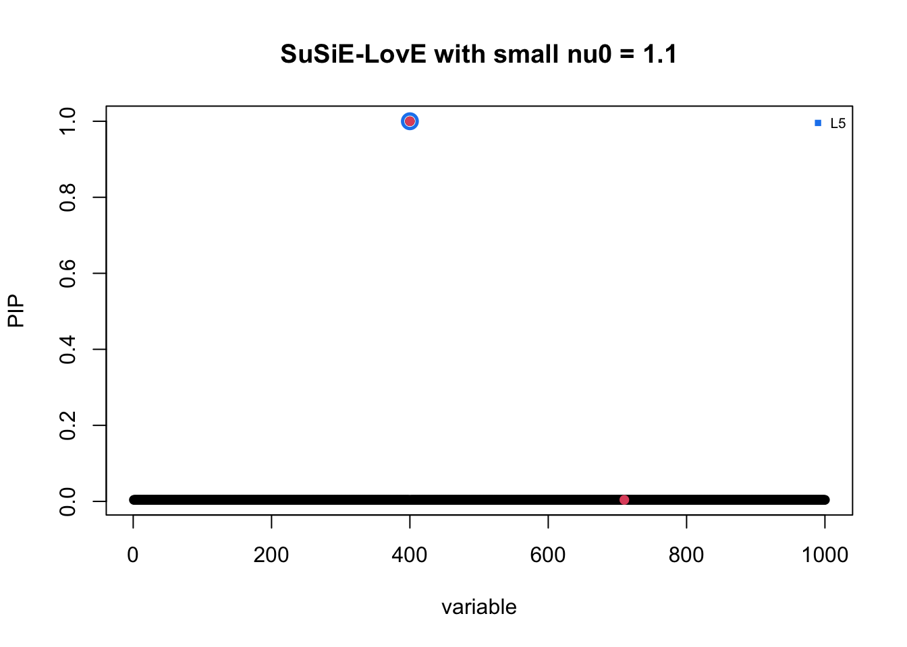
| Version | Author | Date |
|---|---|---|
| 302fc36 | dodat-stats | 2026-05-07 |
The algorithm needs more iterations to converge. But it does lead to L = 1.
5. Investigate Rq (the estimated covariance matrix in susie-love having conservative behaviour)
Now let’s check if the learned LD is similar to our guess (discussion with Matthew):
\[R_{null} = S + \eta vv^\top, \] where \(\eta\) is chosen to be as large as possible, and \(S\) is a digonal matrix so that the diagonal of this \(R_{null}\) equals to the diagonal of the in-sample LD matrix \(\diag(R)\).
eta = min(diag_R / v^2)
## check
diag_diff = diag_R - diag(eta * tcrossprod(v))
min(diag_diff) ## should = 0[1] 0R_null = eta * tcrossprod(v)
diag(R_null) = diag_R
zlim <- range(R_null, R_q)
par(mfrow = c(1, 2))
## first 100 x 100 values
image(R_null[1:100, 1:100], main = "Null cov mat", col = heat.colors(20), zlim = zlim)
image(R_q[1:100, 1:100], main = "Learned cov mat", col = heat.colors(20), zlim = zlim)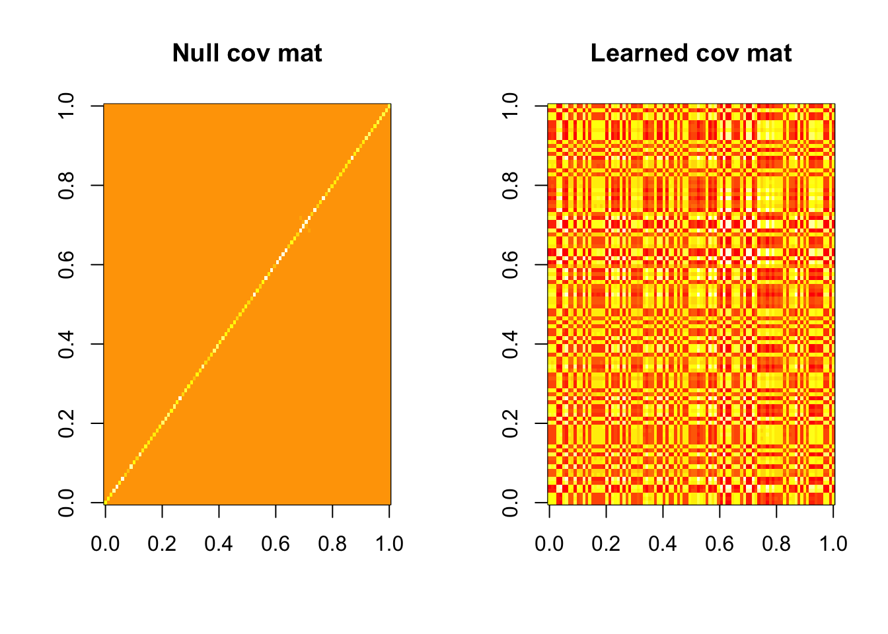
| Version | Author | Date |
|---|---|---|
| 302fc36 | dodat-stats | 2026-05-07 |
par(mfrow = c(1, 1))Ok they don’t look similar at all. Let check the rank of the learned matrix
eig = eigen(R_q)
envals = eig$values
plot(c(1:J), envals, pch = 16)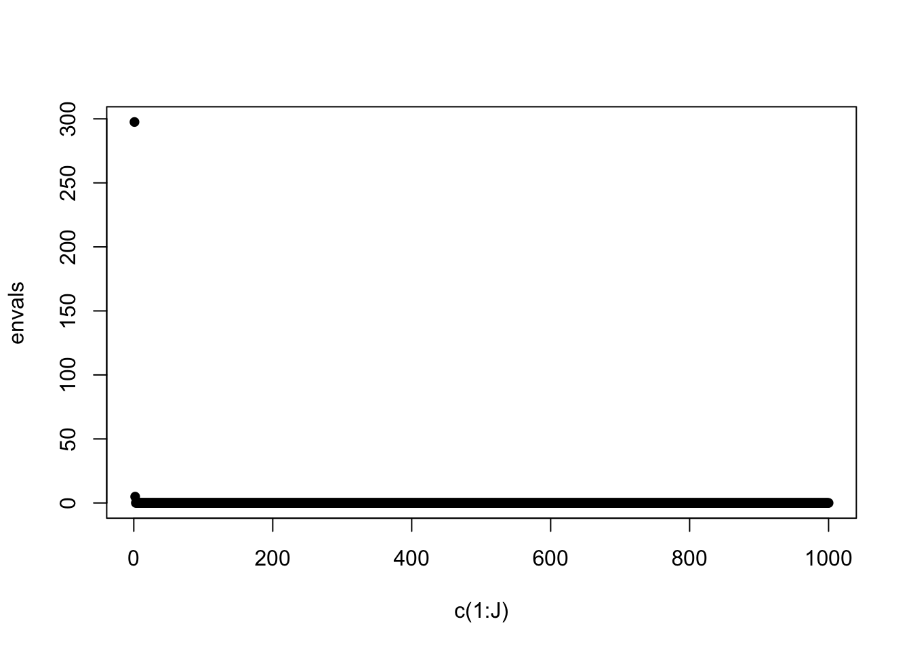
| Version | Author | Date |
|---|---|---|
| 302fc36 | dodat-stats | 2026-05-07 |
print(envals[c(1:10)]) [1] 297.53827959 4.92194452 0.04409401 0.03734692 0.03570464
[6] 0.03366473 0.03241327 0.02996574 0.02845524 0.02729568Indeed \(R_q\) has rank close to 1. Rank of the guessed null matrix:
eig_null = eigen(R_null)
envals_null = eig_null$values
plot(c(1:J), envals_null, pch = 16)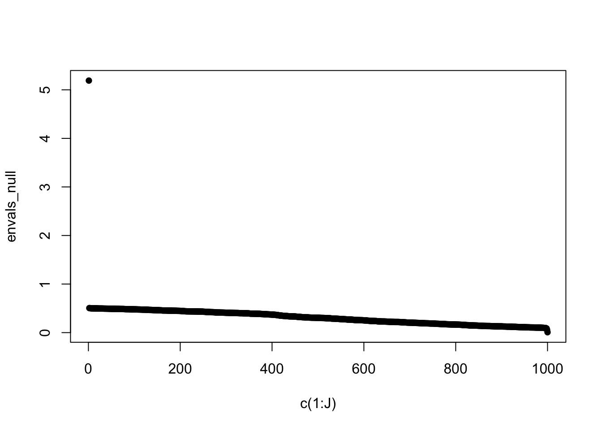
| Version | Author | Date |
|---|---|---|
| 302fc36 | dodat-stats | 2026-05-07 |
print(envals_null[c(1:10)]) [1] 5.1899984 0.5055044 0.5033606 0.5031250 0.5021538 0.5007625 0.5007392
[8] 0.5004072 0.5003406 0.5002980It is also close to 1. I am still investigate to see what is the form of this matrix \(R_q\).
More visualization of the learned Rq
Row of Rq at the true SNP
I visualize the value of Rq at the row of the true causal SNP that it catches. Indeed the value is very close to \(v\).
plot(c(1:J), R_q[true_SNP[1], ] * beta_true[true_SNP[1]], col = 'red')
points(c(1:J), v, col='blue')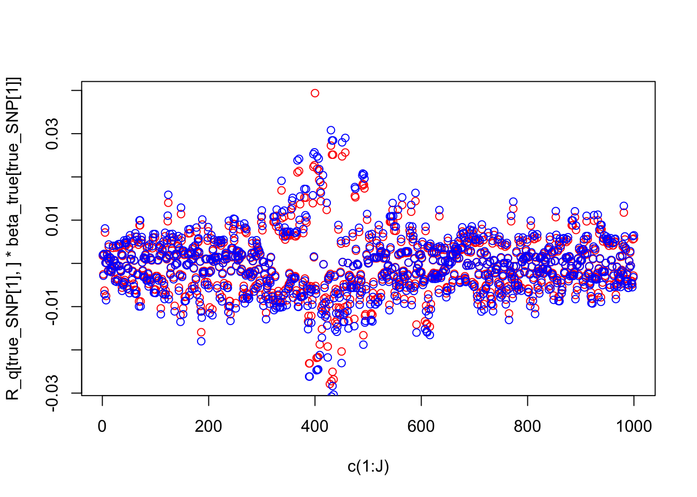
| Version | Author | Date |
|---|---|---|
| 302fc36 | dodat-stats | 2026-05-07 |
Other rows
For all other rows it has this weird behaviour:
plot(c(1:J), R_q[1, ])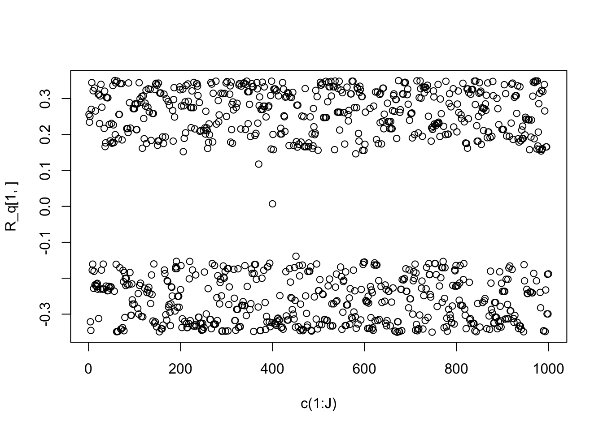
| Version | Author | Date |
|---|---|---|
| 302fc36 | dodat-stats | 2026-05-07 |
plot(c(1:J), R_q[2, ], col = 'black')
points(c(1:J), R_q[3, ] / R_q[3, 1] * R_q[2, 1], col = 'red')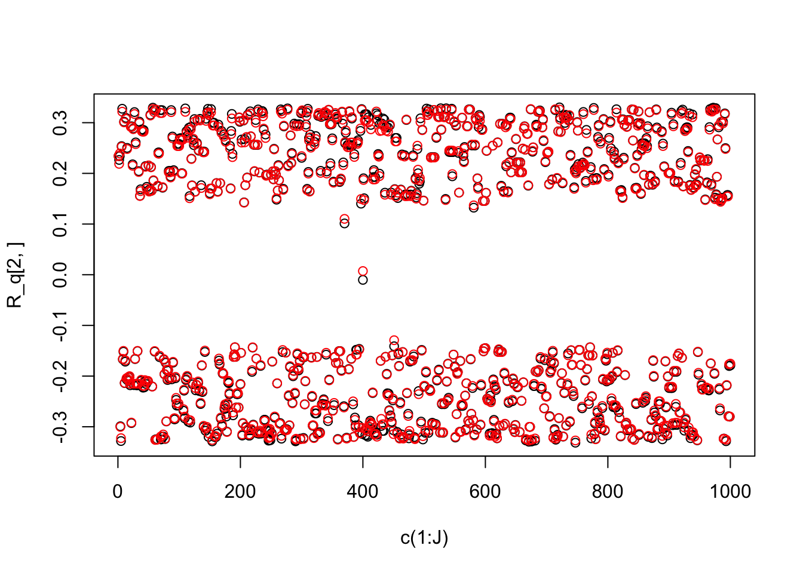
| Version | Author | Date |
|---|---|---|
| 302fc36 | dodat-stats | 2026-05-07 |
plot(c(1:J), R_q[2, ], col = 'black')
points(c(1:J), R_q[3, ] / R_q[3, 1] * R_q[2, 1], col = 'red')
| Version | Author | Date |
|---|---|---|
| 302fc36 | dodat-stats | 2026-05-07 |
The R_null that we proposed before has all rows similar to v (in each row, the biggest value is the same as the corresponding value on the diagonal of R).
plot(c(1:J), R_null[1, ])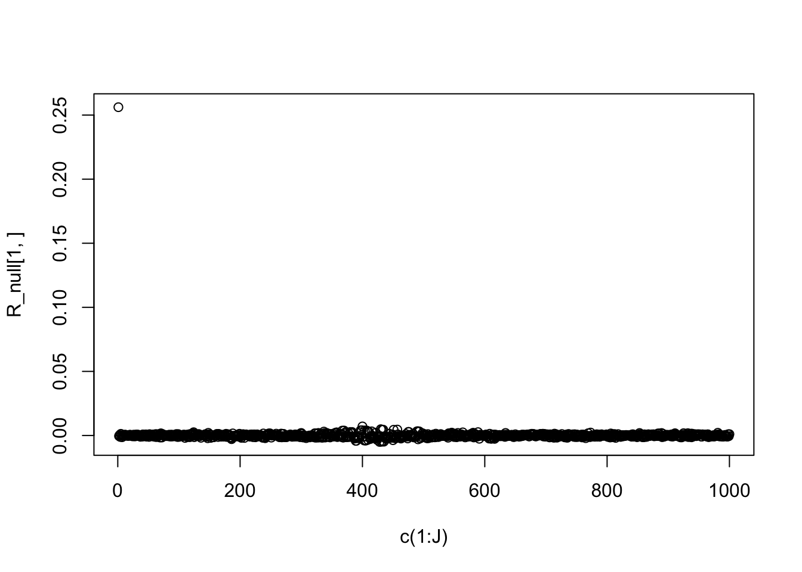
| Version | Author | Date |
|---|---|---|
| 302fc36 | dodat-stats | 2026-05-07 |
which.max(R_null[1, ])[1] 1plot(c(1:J), R_null[2, ])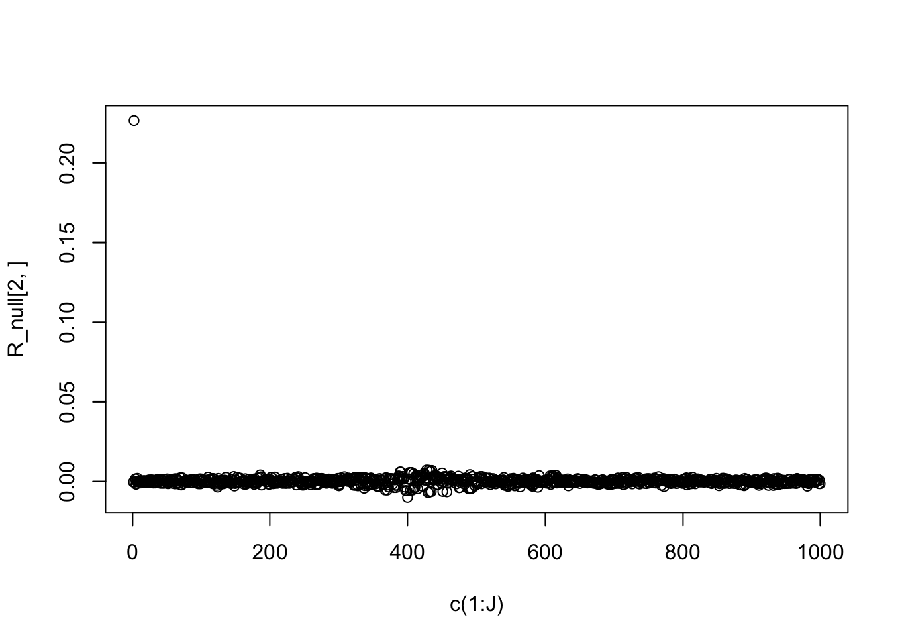
| Version | Author | Date |
|---|---|---|
| 302fc36 | dodat-stats | 2026-05-07 |
which.max(R_null[2, ])[1] 2Conclusion on the Rq
Because except the row/column corresponding to one of the true causal SNP being similar to v, all the other rows of \(R_q\) are multiplier of others, we can conclude that \(R_q\) has this form: \[R_q = u u^\top + \eta vv^\top, \] where \(u \in \mathbb{R}^J\). Our intuition of R_null is like a diagonal matrix + vvT. But perhaps R_null is more like rank-one + vvT.
Anyway, this R_q still has the effect that \(v \approx R_q b_1\), where \(b_1\) is a single effect vector (i.e., after taking this single effect out, there is no left signal to learn the second single effect).
b_bar = colSums(b_res$alpha * b_res$mu)
leftover_signal = v - R_q %*% b_bar
t(leftover_signal)[1:100] [1] 1.713581e-05 -1.593786e-05 1.853939e-05 -5.206653e-05 4.899160e-05
[6] 4.854389e-06 -5.203269e-05 -5.067556e-06 1.082898e-05 1.179076e-05
[11] -1.679441e-05 2.817713e-05 7.267968e-06 5.672244e-06 -9.446932e-06
[16] 3.909503e-06 -1.673719e-05 -1.133808e-05 -1.198765e-05 2.401126e-05
[21] 1.184012e-05 -1.144847e-05 1.144847e-05 -2.433635e-05 7.007485e-06
[26] 2.433635e-05 -2.452605e-05 -5.744697e-06 -2.444970e-05 2.641737e-05
[31] 2.641737e-05 -7.096190e-06 2.641737e-05 -5.358652e-06 -8.953669e-06
[36] 1.647290e-05 -3.781548e-05 8.946672e-06 -3.039442e-05 -2.843174e-05
[41] 3.221137e-05 -2.553014e-05 2.927074e-05 2.788293e-05 8.958093e-07
[46] 3.288635e-05 -3.638091e-05 -1.099606e-05 -1.124788e-05 2.957530e-05
[51] -4.138134e-05 4.619290e-05 1.053362e-05 1.302398e-05 1.843453e-05
[56] -2.876638e-05 -6.491396e-06 3.645633e-05 -2.902508e-05 2.478677e-06
[61] -5.262105e-05 5.283639e-05 -5.322874e-05 -5.322874e-05 4.374854e-05
[66] -1.286614e-05 -1.286614e-05 3.021461e-05 -6.127811e-05 6.127810e-05
[71] 6.127811e-05 -6.127812e-05 3.863917e-05 3.367338e-05 -2.915577e-07
[76] -1.349842e-05 -2.663024e-05 7.290104e-06 -2.236134e-05 5.963030e-06
[81] 9.084165e-06 4.652635e-06 -2.315219e-05 2.312777e-05 -2.320590e-05
[86] -1.287738e-05 -2.823210e-05 2.564397e-05 -2.180808e-05 7.036099e-06
[91] -2.563365e-05 -6.430720e-07 -1.163046e-06 2.320684e-05 3.367546e-05
[96] 4.118281e-05 -4.118281e-05 -4.118281e-05 4.118281e-05 -4.160751e-05One simple way to make inference about \(\eta\) (the multiplier of \(vv^\top\)) in \(R_q\) is as follows:
eta = as.numeric(1 / v %*% solve(R_q + 1e-10 * diag(J), v))
eta[1] 80.46958After having this \(\eta\), the vector \(u = (u_j)_{j=1}^{J}\) is constructed so that \[\text{diag}(u u^\top + \eta vv^\top) = \text{diag}(R)\] in other words, \[u_j^2 = R_{jj} - \eta v_j^2, \quad \forall j,\] and the signs of each \(u_j\) can be arbitrary.
uuT = R_q - eta * tcrossprod(v)Conclusion
The conservative covariance matrix that we get from susie-love is approximately of the form rank-one-plus-vvT: \[R_{conservative} = uu^\top + \eta vv^\top, \] Here is a theoretical characterization of \(u\) and \(\eta\):
Firstly, because \(\eta\) capture the maximmal information of \(vv^\top\) in \(R_{conservative}\), we have \[v^\top (R_{conservative} - \eta vv^\top) v = 0\] which leads to \((v^\top u)^2 = 0\). This implies \(u \perp v\).
Suppose that the learned \(\bar{b} = \beta_1 \gamma_1\) with \(\gamma_1 = e_k\) has 1 at \(k\) and 0 otherwise and \(\beta_1 \in \mathbb{R}\). The fact that (I change \(\approx\) to \(=\) for simplicity) \[v = R_{conservative} \overline{b} \] leads to \[v = u u^\top + \eta vv^\top (\beta_1 e_k) = \beta_1 u_k u + \beta_1 \eta v_k v\] implies \(u_k = 0\) (since \(u\perp v\)) and \(\eta = 1 / (\beta_1 * v_k)\).
We can check this
u = uuT[1, ] / sqrt(abs(uuT[1, 1]))
u %*% v ## should near 0; subject to the error due to the low-rank part (R_conservative is still a full rank matrix anyway) [,1]
[1,] -0.1669086k = true_SNP[1]
u[k] [1] -7.01562e-05This u_k is near 0 as it is significantly smaller than other u
u[1][1] 0.5058056u[2][1] 0.4639299u[3][1] 0.4946102Finally we check the identity of \(\eta\):
eta * v[k] * beta_true[k] ## should near 1[1] 0.8862974
sessionInfo()R version 4.3.2 (2023-10-31)
Platform: aarch64-apple-darwin20 (64-bit)
Running under: macOS 26.2
Matrix products: default
BLAS: /System/Library/Frameworks/Accelerate.framework/Versions/A/Frameworks/vecLib.framework/Versions/A/libBLAS.dylib
LAPACK: /Library/Frameworks/R.framework/Versions/4.3-arm64/Resources/lib/libRlapack.dylib; LAPACK version 3.11.0
locale:
[1] en_US.UTF-8/en_US.UTF-8/en_US.UTF-8/C/en_US.UTF-8/en_US.UTF-8
time zone: America/Chicago
tzcode source: internal
attached base packages:
[1] stats graphics grDevices utils datasets methods base
other attached packages:
[1] susieR_0.14.2 susielove_0.1.0
loaded via a namespace (and not attached):
[1] sass_0.4.10 generics_0.1.4 stringi_1.8.7 lattice_0.22-7
[5] digest_0.6.39 magrittr_2.0.3 evaluate_1.0.5 grid_4.3.2
[9] RColorBrewer_1.1-3 fastmap_1.2.0 plyr_1.8.9 rprojroot_2.1.1
[13] workflowr_1.7.1 jsonlite_2.0.0 Matrix_1.6-1.1 whisker_0.4.1
[17] reshape_0.8.10 mixsqp_0.3-54 promises_1.5.0 scales_1.4.0
[21] jquerylib_0.1.4 cli_3.6.5 rlang_1.1.6 crayon_1.5.3
[25] withr_3.0.2 cachem_1.1.0 yaml_2.3.10 otel_0.2.0
[29] tools_4.3.2 dplyr_1.1.4 ggplot2_3.5.2 httpuv_1.6.16
[33] reticulate_1.42.0 vctrs_0.6.5 R6_2.6.1 png_0.1-8
[37] matrixStats_1.5.0 lifecycle_1.0.4 git2r_0.36.2 stringr_1.6.0
[41] fs_1.6.6 irlba_2.3.5.1 pkgconfig_2.0.3 pillar_1.11.1
[45] bslib_0.9.0 later_1.4.2 gtable_0.3.6 glue_1.8.0
[49] Rcpp_1.1.0 xfun_0.52 tibble_3.3.0 tidyselect_1.2.1
[53] rstudioapi_0.17.1 knitr_1.50 farver_2.1.2 htmltools_0.5.8.1
[57] rmarkdown_2.29 compiler_4.3.2